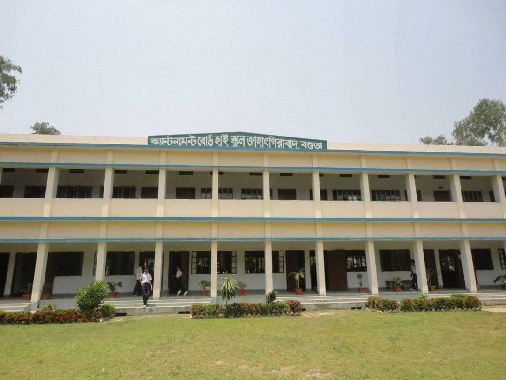

I'm a student of UIU. I live in Sayednagar.
My home district is in Rajshahi.
I've completed my SSC from Cantonment Board High School Jahangirabd.
Here's the facebook link to our school:Cantonment Board High School Jahangirabad

After SSC,I got admitted in Bogura Cantonment Public School And College for complete my HSC.
Computer Engineers theorize,design,develop and apply the software and hardware for the programmes we use day in day out.Such a creative field it is,Studing Computer engineering helps you widen your creative horizon and provide solutions to the problems people haven't thought about yet.
Go to page 2